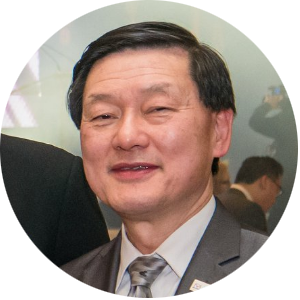
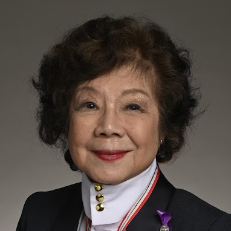
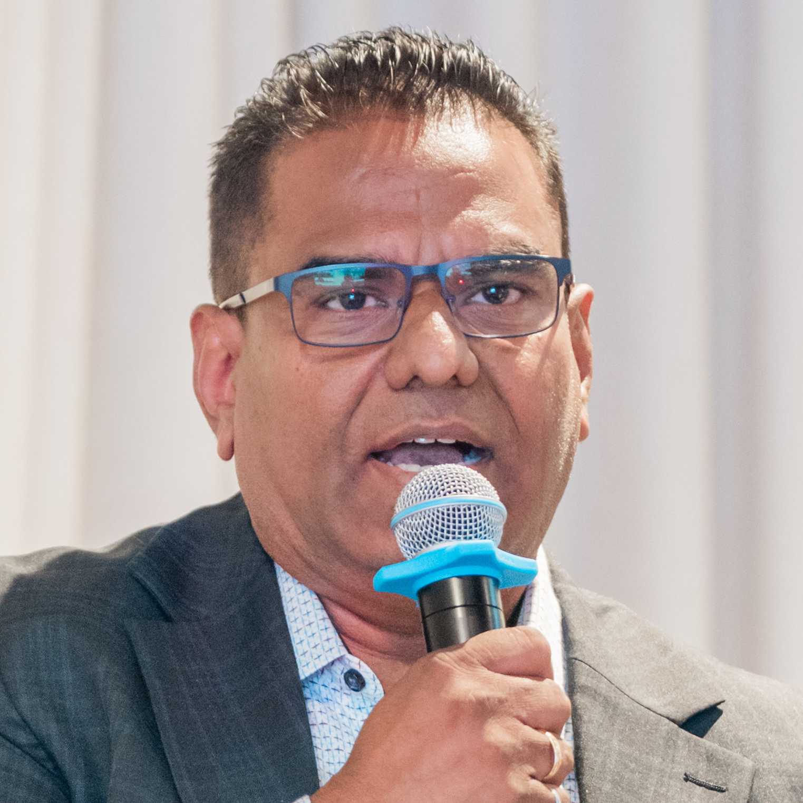
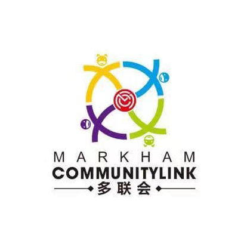

I have known Ritch Lau since he was a teenager, when he began volunteering with the Federation of Chinese Canadians in Markham (FCCM) and Taste of Asia. Over the years, I have seen his passion for serving the community and his commitment to giving back. As a City Councillor, Ritch has continued to support FCCM, help promote Chinese heritage and culture in the City of Markham, and assist with fundraising and community initiatives. He is a dedicated community leader who genuinely cares about people, and I wish him every success in his re-election campaign
我從 Ritch Lau 年輕時便認識他，當時他已積極參與萬錦市加華聯會（FCCM）及亞洲文化美食節的義工服務。多年來，我見證他對社區服務的熱誠，以及回饋社會的承擔。擔任市議員後，Ritch 繼續支持 FCCM，積極推廣華人文化及社區發展。他是一位真心關心社區、用心服務市民的領袖，我衷心支持他競選連任。
Dr. Ken Ng, Chairman of FCCM & Taste of Asia
Ward 2 Resident第二選區居民

I have known Councillor Ritch Lau for a number of years now. I have personally seen him in action - he thinks before he leaps. He is not known as someone who boasts about his accomplishments, but they speak for him. I had a concrete example: one of his constituents needed help in resolving some issues in his condo but he was getting absolutely nowhere. He saw Ritch as his last hope before litigation. With superb negotiating skills, Ritch reached out to the other party. After one phone call, he brought both sides to a satisfactory agreement and sealed the deal! That was superior skill and genuine service to the public!
我認識 Ritch Lau 議員已有多年，也親眼見證他如何處理居民的問題。他做事深思熟慮，從不誇耀自己的成就，而是用實際行動證明自己。有一次，一位居民因公寓問題久未能解決，甚至準備採取法律行動，最後把希望寄託在 Ritch 身上。Ritch 憑著出色的協調及談判能力，主動聯絡另一方，僅僅一通電話，便成功促成雙方達成滿意的協議，圓滿解決問題。這正是 Ritch 卓越的能力，以及真心服務市民的最佳體現。
Nancy M. Siew, OOnt., M.S.W., R.S.W. (Ret'd), DLJ, DSG.
Former Citizenship Judge and Hon. Lt-Colonel加拿大前公民法官、榮譽中校
Councillor Ritch Lau has been a strong advocate for the safety of the Cachet community. He has worked closely with York Regional Police to address concerns about home break-ins, home invasions, and auto thefts, while keeping residents informed and engaged. Ritch has also advocated for additional street lighting to improve visibility and enhance neighbourhood safety. He is always approachable, listens to residents' concerns, and works hard to find practical solutions that make our community safer. I appreciate his dedication to Cachet and wish him every success in his re-election campaign
Ritch Lau 議員一直積極守護 Cachet 社區的治安。他與約克區警察密切合作，關注住宅爆竊、入屋盜竊及汽車盜竊等問題，同時積極向居民提供資訊，聆聽社區聲音。Ritch 亦積極爭取增加街道照明，改善視野及社區安全。他親切易於接觸，重視居民意見，並努力尋求實際可行的解決方案，讓社區更加安全。我非常感謝 Ritch 對 Cachet 社區的付出，並祝願他競選連任成功。
Cathy Ru
Administrator of Cachet Neighbourhood Watch groupCachet 凱旋區鄰舍守望群組管理員
Shortly after being elected as the City Councillor for Markham Ward 2 in 2022, Ritch joined our Cachet Neighbourhood Watch community group. Since then, he has been an active and engaged member, taking the time to listen to residents, respond to concerns, and stay connected with our community. He has consistently been accessible, responsive, and genuinely committed to serving our neighbourhood. He is well respected by many residents for his professionalism, integrity, and willingness to help. I appreciate his dedication to the Cachet community, and I admire his passion for helping others. I am confident that he will continue to be a strong voice for our neighbourhood, and I wholeheartedly support his re-election.
Ritch Lau 於 2022 年當選萬錦市第二選區市議員後不久，便加入我們的 Cachet 鄰里守望社區群組。自此，他一直積極參與，聆聽居民意見、回應社區關注，並與居民保持緊密聯繫。他一直親民、積極跟進居民訴求，真心致力服務社區。憑著專業、正直及樂於助人的態度，深受許多居民尊重。我非常感謝他對 Cachet 社區的付出，也欣賞他熱心助人的精神。我深信他會繼續成為社區堅定的聲音，因此我全力支持 Ritch Lau 競選連任」
Soon-Mei Wong
Founder and Administrator of Cachet Neighbourhood Watch group凱旋區鄰舍守望群組創辦人、管理員
Councillor Ritch Lau has been a strong advocate for the safety and well-being of the Cachet West/Markland community. He has worked closely with York Regional Police to address residents’ concerns regarding home invasions, break-ins, and vehicle thefts, while keeping our neighbourhood informed and connected with available resources. Ritch has also taken the initiative to organize crime prevention events, bringing together residents and police to share the latest crime trends, safety advice, and community policing initiatives. His hands-on approach, accessibility, and commitment to making our neighbourhood safer demonstrate his dedication to serving residents. I wish Ritch every success in his re-election campaign.
Ritch Lau 議員一直積極關注 Cachet West／Markland 社區的安全與福祉。他與約克區警察密切合作，處理居民對入屋盜竊、爆竊及汽車盜竊等問題的關注，同時向社區提供最新資訊及相關安全資源。Ritch 亦主動舉辦防罪活動，聯繫居民與警方，分享最新犯罪趨勢、安全資訊及社區警政措施。他親力親為、親民易於接觸，並一直致力為社區尋求實際的安全方案，充分展現他服務居民的承擔。我衷心感謝 Ritch 對社區的付出，並祝願他競選連任成功。
Nelson Yeung
Founder and Administrator of Cachet West Neighbourhood Watch group凱旋西區鄰舍守望群組創辦人、管理員

Over these past years, I have watched him go above and beyond to secure services the Victoria Square community needs, addressing every concern, big or small, with the same level of care and urgency. I have seen firsthand how much he cares about the community when we brought up the issue of our community not having City supplied water and sewer services. He then initiated the meetings between City officials and community members to find the best ways to address the situation. We see the results of his action is in the works.
It is rare to find someone who combines such dedication with such genuine warmth, and our community is fortunate to have him in this position. I wholeheartedly and gladly endorse Councillor Ritch Lau for re-election, with full confidence that he will continue to serve us with the same heart and commitment.”
過去幾年，我親眼見證他積極為 Victoria Square 社區爭取所需的服務，無論大小問題，他都同樣認真對待，迅速跟進。當我們反映社區缺乏市政府供應的食水及污水管道服務時，我親身感受到 Ritch 對社區的關心。他主動安排市政府官員與社區居民會面，共同尋求最佳解決方案。如今，我們已經看到相關改善工程正在逐步落實。能夠將如此投入的服務精神與真誠親切的態度結合於一身，是非常難得的。我們的社區很幸運能有 Ritch 擔任市議員。我全心全意支持 Ritch Lau 議員競選連任，深信他會繼續以同樣的熱忱與承擔服務我們的社區。
Kandish Ramanan
Victoria Square Ratepayers AssociationVictoria Square 居民協會

We sincerely thank Councillor Ritch Lau for his support and assistance to Markham Community Link over the past four years. He has helped us build connections with York Regional Police and Markham Fire and Emergency Services, which has allowed our annual community trunk sale events to run smoothly. Ritch has always been enthusiastic, supportive, and willing to help with community initiatives. We appreciate his dedication to the residents of Ward 2 and wish him every success in his re-election campaign.
我们感谢刘肇麟议员（Ritch Lau）过去四年来对多联会（Markham Community Link）的支持与协助。他积极帮助我们与约克区警队及万锦消防局建立联系，让我们每年举办的社区后备箱市集活动得以顺利举行。Ritch 一直以来都非常热心、乐于协助，并积极支持社区活动。我们感谢他对第二区居民的付出，并衷心祝愿他在连任竞选中一切顺利。
Demi
Markham Community Link Founder, Administrator of Markland Neighbourhood Watch group多联会创办人、Markland鄰舍守望群組管理員